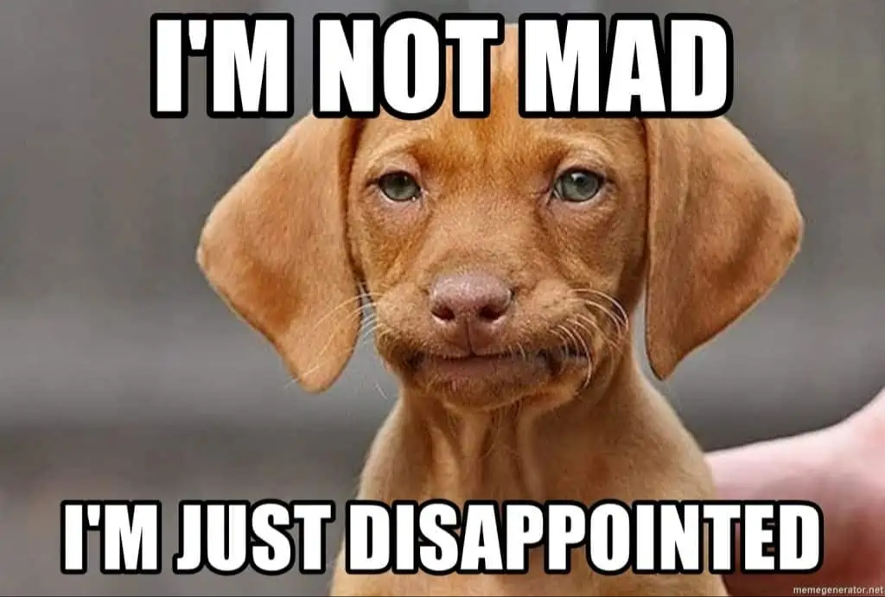

Sampling designs
Why do we care about sampling ?
Let’s imagine you want to evaluate the levels of burnout in all companies in USA. Is it feasible?
If not, what should we do? How do we get enough information to evaluate burnout nationally?
What is a good sample?
Lohr (2021): - A sample is representative if it can be used to “reconstruct” what the population looks like—and if we can provide an accurate assessment of how good that reconstruction is.
- Let’s define some concepts:
- Observation unit: An object on which a measurement is taken, sometimes called an element. In psychology we sample individuals most of the time, but in evolutionary psychology you might compare humans and animal models.
- Target Population: The complete collection of observations we want to study. For instance: all voters? all technology companies in US?
- Sample: A subset of a population.
More important concepts
Sampling unit: A unit that can be selected for a sample.
Sampling frame A list, map, or other specification of sampling units in the population from which a sample may be selected. For a telephone survey, the sampling frame might be a list of telephone numbers of registered voters, or simply the collection of all possible telephone numbers.
Selection Bias
- Selection bias occurs when the target population does not coincide with the sampled population or, more generally, when some population units are sampled at a different rate than intended by the investigator.
- Ex: overrepresentation of high income households.
This is how samplig bias happens!
Convenience Samples: Some persons who are conducting surveys use the first set of population units they encounter as the sample. The problem is that the population units that are easiest to locate or collect may differ from other units in the population on the measures being studied.
Purposive or Judgment Samples: the investigators use their judgment to select the specific units to be included in the sample.
Self-Selected Samples: A self-selected sample consists entirely of volunteers who select themselves to be in the sample.
Nonresponse: —failing to obtain responses from some members of the chosen sample—distorts the results of many surveys
Can we generalize the information to the population in these cases?
Are samples with selection bias good?
- Many of the studies in psychology have selection bias, even classical studies.
- But they are still useful, however the authors cannot claim representative conclusions.
- We also struggle with measurement error such as: is people telling the truth? do participants understand the questions? can they remember details? socially desirable answers?

Types of probability sample
Simple random sample: All units have the same chance to be the sample.
Stratified random sample: the population is divided in subgroups, and then we sample observations randomly from each group or stratum. Example, social economical status.
Cluster sample: observation units in the population are aggregated into larger sampling units, called clusters. Example: university departments, companies.
Systematic sample: a starting point is chosen from a list of population members using a random number. That unit, and every kth unit thereafter, is chosen to be in the sample. A systematic sample thus consists of units that are equally spaced in the list.
- Example: A systematic sample could be chosen by selecting an integer at random between 1 and 20; if the random integer is 16, say, then you would include professors in positions 16, 36, 56, and so on, in the list.
Remember !
The sampling strategies mentioned at this point are a good option when you are conducting a correlational study in a survey design.
The sampling strategy in experimental and quasi-experimental designs is based on the theory and experimental design.
A pure experiment aims to determine the causal relationship between
XandY. This means, we’ll have to generate an artificial condition that will affect the external generalizability of the experiment.